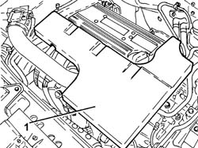
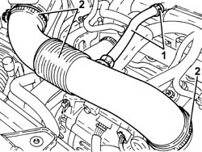
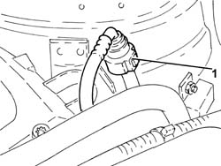
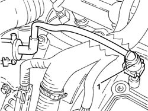
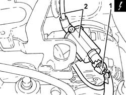
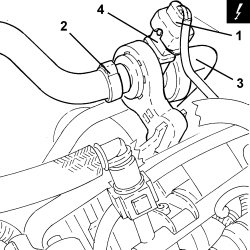
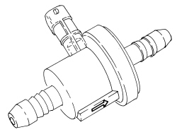
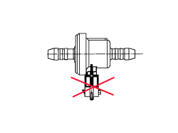

1080E28 ENABLEMENT SOLENOID FOR FLOW OF FUEL VAPOUR TO INLET - R+R
- Path
- Procedures > 10 ENGINE > 1080 EMISSION CONTROL SYSTEM > 1080E EVAPORATION CONTROL SYSTEM > 1080E28 ENABLEMENT SOLENOID FOR FLOW OF FUEL VAPOUR TO INLET - R+R
- Kind
- repair procedure (removal / refitting; the operation number is the code)
- Applies to
- engines: 1.8, 2.2; all production periods
- Interactive page
- https://sloeber94.github.io/elrnDB-fCrm/en/#/194000374
Applies to: engines: 2.2; all production periods
 Removing
Removing
 Refitting
Refitting- Make sure that the ignition key is in the OFF position, then disconnect the battery terminal (-).
Description | Connector | |
|---|---|---|
- | Battery |
1. Remove the sound insulation cover fastened to the engine by three pins.

Applies to: engines: 2.2; all production periods
1. Loosen the band and disconnect the engine oil vapour recovery pipe from the cylinder head cover.
2. Loosen the bands and remove the air supply hose from the air flow meter to the throttle casing.

Applies to: engines: 2.2; all production periods
1. Disconnect the rapid connector for the inlet fuel vapour flow enablement solenoid valve pipe, fuel vapour centre pipe side.

Applies to: engines: 2.2; all production periods
1. Disconnect the rapid connector for the inlet fuel vapour flow enablement solenoid valve pipe, air chamber side.

Applies to: engines: 2.2; all production periods
1. Disconnect the electrical connection from the inlet fuel vapour flow enablement solenoid valve.
Description | Connector | |
|---|---|---|
1 | Fuel vapour recovery solenoid valve |
2. Release the inlet fuel vapour flow enablement solenoid valve from the fastening, then remove it complete with pipes.

Applies to: engines: 2.2; all production periods
Refitting
Removing- Place the inlet fuel vapour flow enablement solenoid valve complete with pipes in its housing and secure it.
- Connect the electrical connection to the inlet fuel vapour flow enablement solenoid valve.
- Connect the rapid connector for the inlet fuel vapour flow enablement solenoid valve pipe, air chamber side.
- Connect the rapid connector for the inlet fuel vapour flow enablement solenoid valve pipe, fuel vapour centre pipe side.
- Connect the engine oil vapour recovery pipe to the cylinder head cover and secure it using the band.
- Place the sound insulation cover back in its housing and secure it to the engine using the three pins.
- Connect the negative battery terminal.
Applies to: engines: 1.8; all production periods
Removing
Refitting1. Disconnect the electrical connection for the solenoid valve.
Description | Connector | |
|---|---|---|
1 | Fuel vapour recovery solenoid valve |
2. Loosen the band and disconnect the fuel vapour inlet pipe from the solenoid valve.
3. Disconnect the fuel vapour supply pipe from the solenoid valve.
4. Remove the solenoid valve from the mounting bracket.

Applies to: engines: 1.8; all production periods
Refitting
Removing- Place the solenoid valve in its seat.

Applies to: engines: 1.8; all production periods
- Connect the fuel vapour supply pipe to the solenoid valve.
- Connect the fuel vapour inlet pipe to the solenoid valve and tighten the band.
- Connect the electrical connection for the solenoid valve.
